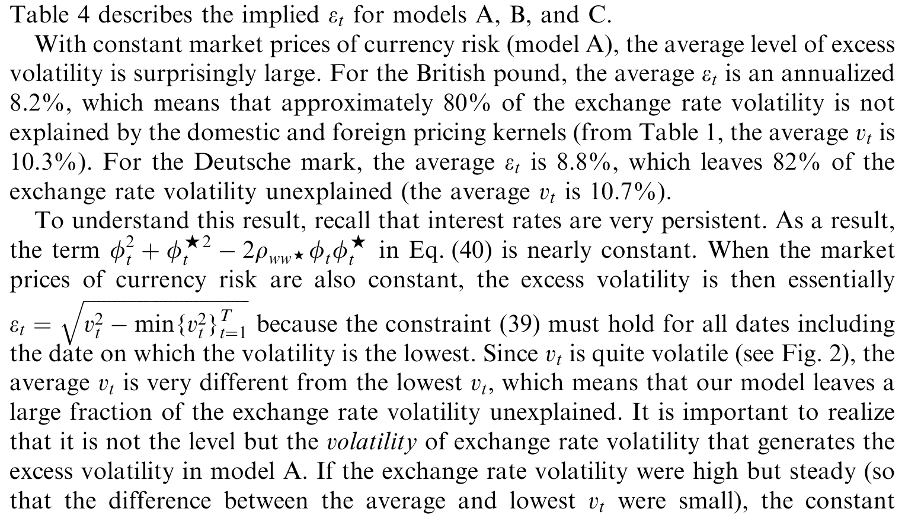
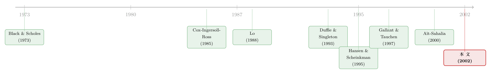

写不出来的似然函数，就让它自己「跑」一遍
本文读的是 Brandt & Santa-Clara (2002, JFE)：当一个连续时间扩散模型的似然函数根本写不出闭式时，他们用「欧拉离散 + 蒙特卡洛模拟」把转移密度一步步逼出来，造出一个与不可得的极大似然估计量渐近等价的估计器；再用它估计一个「允许市场不完全」的双国利率—汇率模型，发现汇率波动里有很大一块，是与两国所有「被定价的风险」都正交的——也就是市场不完全本身。
1 一个写在连续时间里、却只能在离散点上观测的世界
金融和经济学里，太多模型是用连续时间写成的。利率、汇率、股价、波动率——它们的「教科书形态」几乎都是一条随机微分方程 (stochastic differential equation, SDE)。原因不难理解：连续时间下有伊藤积分这套漂亮的工具，资产定价里又靠「连续交易」让市场得以完备、让衍生品的支付得以被复制。可问题是，我们手里的数据从来不是连续的。我们只能在一周一次、一天一次、最多一秒一次的离散时点上，看到这条路径落在哪里。
于是一个尴尬的裂缝出现了：模型活在连续时间，数据却长在离散的点上。
对任何参数模型，估参数的「黄金标准」都是极大似然 (maximum likelihood, ML)——它一致、渐近有效、渐近正态，几乎把一切好性质都占全了。可要写下似然函数，你得知道「离散观测之间的转移密度」长什么样。而这恰恰是扩散模型最难的地方：除了少数特例——线性漂移加常数（或正比）方差的扩散（Chen and Scott, 1993; Pearson and Sun, 1994），以及差一个特征函数反演的仿射跳扩散（Singleton, 2001）——绝大多数模型的转移密度，根本写不出闭式。
似然函数写不出来，ML 就成了「看得见、够不着」的东西。
2 人们绕过去的那些路
既然正面攻不下，文献里长期是在「绕」。
第一条路是放弃似然，改用矩。 这是 ML 最流行的替身：基于欧拉离散的无条件矩（Chan, Karolyi, Longstaff and Sanders, 1992）、模拟矩（Duffie and Singleton, 1993）、由扩散的无穷小生成元导出的矩（Hansen and Scheinkman, 1995）……它们大多一致且渐近正态。但除了 Gallant 和 Tauchen (1997) 那套「能渐近模拟出 ML」的有效矩方法 (efficient method of moments, EMM)，矩估计普遍没有 ML 有效。你用矩，就等于主动放弃了一部分信息。
第二条路是硬解似然。 Lo (1988) 提出直接数值求解前向 Kolmogorov 偏微分方程 (PDE)，配上边界条件，把转移密度算出来。听上去直接，可你得对每一个数据点都解一次 PDE，多维扩散尤其昂贵，还得有解 PDE 的专门功夫。
第三条路是把似然展开。 Aït-Sahalia (2000) 用解析展开 (analytical expansions) 去逼近转移密度——同样精度下，它比模拟省算力。代价是：为了让展开收敛，你得先把扩散变换得「足够高斯」。这一步变换，牺牲了方法的透明度和通用性。
接着，一个自然的问题是：有没有一种办法，既不丢 ML 的有效性，又不用解 PDE、不用先把模型「掰成高斯」？
3 关键的一步：把那个积分，看成一个期望
本文（方法部分最早由 Santa-Clara 1995 的早期稿本提出，Pedersen 1995 独立得到）的答案，是模拟最大似然 (simulated maximum likelihood, SML)。它的思路可以拆成三步，每一步都极朴素，但合起来恰好补上了那道裂缝。
考虑一个 \(K\) 维连续时间过程 \(Y_t\)，满足
$$ dY_t = \mu(Y_t,t;\theta)\,dt + \Sigma(Y_t,t;\theta)\,dW_t, $$
其中 \(W_t\) 是一组独立布朗运动，漂移 \(\mu\) 与扩散矩阵 \(\Sigma\) 都是状态、时间和参数 \(\theta\) 的函数。因为 \(Y_t\) 是马尔可夫的，离散观测 \(Y_{t_0},\dots,Y_{t_N}\) 的联合密度（也就是似然函数）能拆成初始密度乘以一连串转移密度：
$$ L_N(\theta) = p(Y_{t_0},t_0;\theta)\prod_{n=0}^{N-1} p(Y_{t_{n+1}},t_{n+1}\,|\,Y_{t_n},t_n;\theta). $$
难点只有一个：那 \(N\) 个转移密度 \(p(\cdot|\cdot)\) 写不出来。
第一步，先把区间切碎。 把任意两个相邻观测之间的区间 \([t_n,t_{n+1}]\) 归一化为长度 1，再切成 \(M\) 个小段，每段长 \(h=1/M\)。在这个细网格上，对扩散做欧拉离散 (Euler discretization)：
$$ \hat{Y}_{t_n+(m+1)h} = \hat{Y}_{t_n+mh} + \mu(\hat{Y}_{t_n+mh},t_n+mh;\theta)\,h + \Sigma(\hat{Y}_{t_n+mh},t_n+mh;\theta)\sqrt{h}\,\varepsilon_{t_n+(m+1)h}, $$
\(\varepsilon\) 是标准正态。这一步的妙处在于：欧拉离散的一步转移是高斯的，密度有闭式——
$$ q_M(y,t_n+(m+1)h\,|\,x,t_n+mh;\theta) = \phi\big(y;\,x+\mu(x,t_n+mh;\theta)h,\;V(x,t_n+mh;\theta)h\big), $$
这里 \(\phi(y;\text{mean},\text{variance})\) 是多元正态密度，\(V=\Sigma\Sigma'\)。Kloeden 和 Platen (1992) 证明，随着网格变细（\(M\to\infty\)），欧拉离散弱收敛到原扩散。
可单步是高斯，多步却不是：跨过 \(M\) 步的转移密度，是 \(M\) 个高斯密度的卷积，要算 \(M-1\) 重积分。数值积分一旦维数上去就崩盘。光有欧拉离散，还是估不了 ML。
第二步，也就是真正关键的一步：把这个高维积分，重新解读成一个期望。多步转移密度可以写成
$$ q_M(Y_{t_{n+1}},t_{n+1}\,|\,Y_{t_n},t_n;\theta) = \int_{\mathbb{R}} \phi\big(Y_{t_{n+1}};\,z+\mu(z,t_n+(M-1)h;\theta)h,\;V(z,t_n+(M-1)h;\theta)h\big)\, f(z)\,dz, $$
其中 \(z\) 是离散过程走到倒数第二步 \(t_n+(M-1)h\) 时的落点，它的分布 \(f(z)\) 正是「再往前少走一步」的多步转移密度。这个积分，就是 \(\phi\) 关于随机变量 \(z\) 的期望。
第三步，期望算不出来，那就用样本平均去逼它。 我们没法解析地求这个期望，但我们能用欧拉递推生成 \(z\)：从 \(Y_{t_n}\) 出发，迭代欧拉递推 \(M-1\) 次，得到一个 \(z\) 的抽样；重复 \(S\) 次，拿到一组 \(\{z_1,\dots,z_S\}\)；最后，把 \(\phi\) 在这组抽样上求平均。
这就得到了本文的核心方程——对转移密度的 SML 逼近：
直觉上，这相当于：从已知的起点 \(Y_{t_n}\) 放出 \(S\) 条欧拉路径，看它们走到倒数第二步落在哪儿（\(z_s\)），再问「从这些落点，最后一步恰好连到下一个观测 \(Y_{t_{n+1}}\) 的概率有多大」，把这些概率平均一下，就近似出了转移密度。论文里那张 Fig. 1 画得很形象：\(Y_0=4.00\)、\(Y_1=4.03\) 两个观测之间，四条虚线是不完整的十步离散路径，落点 \(z_s\) 各不相同，我们做的就是沿着四条点线、把「最后一步连到 4.03」的概率求平均。
把所有转移密度和初始密度都这么换掉，最大化由此得到的近似对数似然，就得到 SML 估计量 \(\hat{\theta}_{N,M,S}\)。
4 为什么这么「土」的办法，居然继承了 ML 的全部好处
模拟估计常被怀疑「不够严谨」。本文的底气在两条收敛链上：
- 大数定律管住 \(S\)。 固定网格 \(M\)，当 \(S\to\infty\)，样本平均 \(\tilde{q}_{M,S}\) 收敛到欧拉离散的真实转移密度 \(q_M\)。
- 弱收敛管住 \(M\)。 当 \(M\to\infty\)（\(h\to0\)），\(q_M\) 又收敛到连续时间过程的真实转移密度 \(p\)。
两条链一接，逼近就既一致、又渐近无偏。论文用一系列引理（Lemma 1–6）把这件事做扎实，最后落到：
Theorem 1. 在正则性假设下，当 \(M\to\infty\)、\(S\to\infty\) 且 \(S^{1/2}/M\to0\) 时，\(\hat{\theta}_{N,M,S}\) 收敛到极大似然估计量 \(\hat{\theta}_N\)；后者又在 \(N\to\infty\) 时收敛到真值 \(\theta_0\)。
注意那个条件 \(S^{1/2}/M\to0\)：它要求模拟次数 \(S\) 不能比离散步数 \(M\)「长得太快」——直觉是，离散误差（由 \(M\) 控制）必须比模拟误差（由 \(S\) 控制）消失得更慢，否则你会被欧拉离散本身的偏差带歪。还有一处诚实的细节：因为似然是用「转移密度的近似」而非「对数转移密度的近似」拼出来的，对数变换的非线性会引入一个 \(1/S\) 阶的偏差，Gouriéroux 和 Monfort (1993) 给过一阶修正。
方法上还有两个让它「能用」的小心思。其一，在数值优化里反复评估似然时，对不同参数值复用同一组随机数 \(\varepsilon\)，这样近似转移密度就是参数的光滑函数，目标函数连续、二阶可导——既好优化，也是渐近理论需要的。其二，这套估计器对不等间隔、甚至随机间隔的观测天然适用，这是它相对很多对手的一大长处。
（同一条「用模拟把看不见的东西逼出来」的思路，在把潜变量请进模型时同样好使，可参见《看不见的波动率，换一种「语言」就追到了》。）
5 把刀磨好之后，他们切了一块硬骨头：不完全市场里的汇率
方法只是工具，真正有意思的是他们拿它去干什么。Brandt 和 Santa-Clara 估计了一个双国利率—汇率联合动态的连续时间模型，而它的新意在于：允许金融市场是不完全的，并且把「不完全的程度」本身写成一个随机过程。
逻辑链条是这样的。两国各有自己的瞬时利率过程；货币市场的无套利，决定了汇率的漂移——它由两部分构成：通常的利差，加上一个货币风险溢价。本文把这个货币风险溢价再拆成两块：一块补偿投资者承担的利率风险（来自汇率与本国利率的相关性），另一块补偿与利率风险正交的货币风险，也就是「纯货币风险 (pure currency risk)」。两块溢价的大小，都取决于汇率的波动率。
但波动率恰恰是个麻烦。只有当市场完全时，汇率波动率才能通过无套利条件被两国的风险价格完全「识别」出来。一旦市场不完全，汇率波动里就可能包含一块与两国所有被定价的风险都正交的成分——这一块，正是汇率的「超额波动 (excess volatility)」。为了抓住它，本文给「市场不完全程度」专门设了一个随机过程。
这里有一个识别上的关键巧思：要把不完全程度认出来，他们没有把瞬时波动率当成潜变量去滤，而是直接让它可观测——用一只到期仅一周、平价 (at-the-money) 期权的隐含波动率，作为汇率瞬时波动率的代理。利率则沿用 Cox, Ingersoll and Ross (1985) 的平方根过程，利率风险的市场价格正比于利率的平方根（于是能从债券价格里把它估出来）。纯货币风险的价格，要么设成常数，要么让它依赖于汇率、利差和汇率波动率。
于是反转出现了。在美元/英镑和美元/马克两组数据上，结果都指向同一个方向：
- 利率风险溢价，相对于「与利率正交的货币风险溢价」而言，几乎可以忽略；
- 纯货币风险的市场价格是时变的，是汇率的函数，更重要的是汇率波动率的函数；
- 然而，即便允许货币风险价格时变，仍有很大一块汇率波动被归给了市场不完全。
也就是说，汇率「抖」得没道理的那一部分，并不是哪个被遗漏的风险价格没估进来，而是真有一块波动，游离在两国所有可定价风险之外。论文用 Table 4 报告了三个设定（模型 A、B、C，从纯货币风险价格为常数，到让它依赖汇率、利差与波动率）下隐含出来的不完全程度 \(e\)。

Table 4: describes the implied e for models A, B, and C
（汇率风险溢价「找不到」「对不上」的老问题，在不同框架下被反复追问，可参见《汇率里那块「找不到」的风险溢价》；而把「不完全的消费风险分担」直接写进货币风险溢价的做法，可对照《汇率溢价之谜，藏在各国消费「拉开的差距」里》。）
6 文献脉络
这条线的起点，是把金融搬进连续时间的两篇奠基之作——Merton (1971) 的连续时间消费组合，与 Black and Scholes (1973) 的期权定价。连续交易让市场得以完备，扩散模型由此成了理论家的通用语言。可一旦要拿数据去估它，「转移密度写不出来」的难题就立刻浮现。

第一波回应是「绕开似然」：Lo (1988) 解 PDE 求转移密度；Chan, Karolyi, Longstaff and Sanders (1992) 用欧拉矩；Duffie and Singleton (1993) 把模拟引进矩估计；Hansen and Scheinkman (1995) 从无穷小生成元造矩；Gallant and Tauchen (1997) 的 EMM 则力图「用矩模拟出 ML」。利率端，Cox, Ingersoll and Ross (1985) 的平方根过程成了后续无数实证模型的骨架，本文也直接沿用。
第二波转向「逼近似然本身」：Aït-Sahalia (2000) 用解析展开，本文则用模拟。两者各擅胜场——展开省算力但要先「高斯化」，模拟透明、通用、对不等间隔数据友好但更费算力。本文（2002）正坐在「模拟逼近似然」这一支的源头位置，并用一个不完全市场的汇率模型，示范了这把刀能切多硬的骨头。
（关于「数据该多频繁地采样才不被微观结构污染」，本文也专门提了一句，更细的讨论可见《一秒一笔的数据，为什么只敢拿 5 分钟用一次？》。）
7 评论与延伸（Q&A + 研究方向）
(a) 几个可能的疑问
Q：SML 和「模拟矩 (SMM)」到底差在哪？两者不都是模拟吗？
差在目标。模拟矩（Duffie and Singleton, 1993）模拟的是矩，再去匹配，本质仍是矩估计，渐近上不如 ML 有效。SML 模拟的是转移密度本身，拼出的是似然函数，因此渐近上与不可得的 ML 估计量等价。一个在逼近矩，一个在逼近似然——后者继承了有效性。
Q：那它和 Aït-Sahalia 的解析展开比，凭什么值得用？
同样精度下，解析展开更省算力，这是它的优势。但展开要收敛，得先把扩散变换成「足够高斯」，这一步限制了透明度和通用性。SML 不需要这种变换，对几乎任意扩散、任意（甚至随机）采样间隔都能直接套用——它拿算力换来了透明与通用。
Q：\(S^{1/2}/M\to0\) 这个条件是技术性的，还是有实质含义？
有实质含义。\(M\) 控制离散偏差，\(S\) 控制模拟噪声。这个条件要求模拟次数别比离散步数涨得太快，本质是让「离散误差消失得比模拟误差更慢」，从而保证两类误差协调地趋于零，估计量不被欧拉离散的系统性偏差带偏。
Q：「超额波动 = 市场不完全」这个结论，会不会只是模型设定不够、把没解释的部分一股脑扔进了「不完全」？
这是最该警惕的地方，作者自己也清楚。他们的防线是：即便已经允许货币风险价格随汇率和波动率时变（模型 B、C），那块波动依然留存。也就是说，它不是「少估了一个时变风险价格」能吸收掉的。但严格说，这仍是「模型内的残差解释」，不是对不完全市场的直接外部验证——把任何未被设定的风险，归类为「不完全」，逻辑上无法完全排除。
Q：用一周期权的隐含波动率当瞬时波动率的代理，干净吗？
这是本文识别的命门，也是它的巧思。好处是把一个本该是潜变量的东西变成可观测，从而识别出不完全程度。代价是隐含波动率里掺着方差风险溢价、期权市场的微观结构、以及「一周」并非真正「瞬时」的离散误差——这些都可能渗进对「不完全程度」的估计里。
Q：这套方法只能用在汇率上吗？
完全不是。它对几乎任意扩散都适用，文献里已被用于带跳、带随机波动率的利率期限结构模型（Honoré, Piazzesi, Durham 等）。汇率只是本文挑来「秀肌肉」的一个困难应用——因为它天然牵涉两国利率、无套利约束和不完全市场，足够硬。
(b) 几个可能的研究问题与提案
-
把 SML 搬到公司债的「流动性—信用」联合扩散上。 【经济故事】公司债的利差可拆成信用与流动性两块，二者都随时间连续演化，且很可能由不同的随机源驱动。若把利差写成一个多维扩散、把某只可观测的流动性指标（如成交频率或价格冲击）当作「可观测波动率」式的识别锚，就能像本文识别「不完全程度」那样，把「流动性那一块」从信用里分离出来。 【可行性】中。数据有 TRACE 成交 + 评级 + 利差，识别策略可直接移植本文「让一个本该是潜变量的量变得可观测」的思路；难点在于流动性代理的选取和方差风险溢价的污染，doable 但需要仔细处理代理变量。
-
外资持有人冲击下的汇率「超额波动」是否上升？ 【经济故事】本文把超额波动归给市场不完全。一个自然推论是：当某国债市/股市的外资参与度发生外生变化（如纳入指数、放开额度），其货币的「超额波动」份额应随之改变。这把一个抽象的「不完全程度」与一个可观测的制度冲击挂上了钩。 【可行性】中。需要事件式的外资准入变化 + 该货币的期权隐含波动率，用本文模型在事件前后分别估计 \(e\)；识别依赖准入变化的外生性，doable 但要防同期宏观冲击混淆。
-
\(S^{1/2}/M\to0\) 在有限样本下到底多敏感？ 【经济故事】渐近条件漂亮，但实务里 \(M\)、\(S\) 都有限。一个纯方法论的问题是：在典型金融样本量下，偏差—算力的最优 \((M,S)\) 配置是什么，对参数估计的实际影响有多大。 【可行性】高。纯模拟实验即可，无需新数据；对照 EMM 与解析展开做有限样本「赛马」，doable。
-
用 SML 给「股—债共同冲击」做联合扩散估计。 【经济故事】股与债的流动性、收益常被发现「同呼吸」。若把两者写成共享部分布朗运动的多维扩散，SML 能直接估出共同冲击的载荷，而不必先做线性化或矩匹配。 【可行性】中。数据现成（股债日频 + 流动性指标），方法可套用；维数升高会推高算力，是主要约束。
参考文献
- Aït-Sahalia, Y. (2000). Maximum likelihood estimation of discretely-sampled diffusions: a closed form approach. Econometrica, forthcoming.
- Black, F., Scholes, M. (1973). The pricing of options and corporate liabilities. Journal of Political Economy 81, 637–654.
- Chan, K., Karolyi, A., Longstaff, F., Sanders, A. (1992). An empirical comparison of alternative models of the short-term interest rate. Journal of Finance 47, 1209–1228.
- Cox, J., Ingersoll, J., Ross, S. (1985). A theory of the term structure of interest rates. Econometrica 53, 385–407.
- Duffie, D., Singleton, J. (1993). Simulated moments estimation of Markov models of asset prices. Econometrica 50, 987–1007.
- Gallant, R., Tauchen, G. (1997). Estimation of continuous-time models for stock returns and interest rates. Macroeconomic Dynamics 1, 135–168.
- Hansen, L., Scheinkman, J. (1995). Back to the future: generating moment implications for continuous-time Markov processes. Econometrica 63, 767–804.
- Kloeden, P., Platen, E. (1992). Numeric Solutions of Stochastic Differential Equations. Springer, New York.
- Lo, A. (1988). Maximum likelihood estimation of generalized Itô processes with discretely sampled data. Econometric Theory 4, 231–247.
- Merton, R. (1971). Optimum consumption and portfolio rules in a continuous-time model. Journal of Economic Theory 3, 373–413.